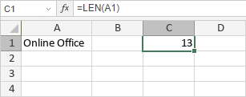

LEN/LENB funkcija
LEN/LENB funkcija je jedna od tekstualnih i funkcija za rad sa podacima. Koristi se za analizu zadatog stringa i vraća broj karaktera koji sadrži. LEN funkcija je namenjena jezicima koji koriste jednobajtni skup karaktera (SBCS), dok je LENB namenjena jezicima koji koriste dvobajtni skup karaktera (DBCS) kao što su japanski, kineski, korejski itd.
Sintaksa
LEN(text)
LENB(text)
LEN/LENB funkcija ima sledeći argument:
| Argument | Opis |
|---|---|
| text | Tekst čiju dužinu želite da odredite. |
Napomene
Kako primeniti LEN/LENB funkciju.
Primeri
Slika ispod prikazuje rezultat koji vraća LEN funkcija.
